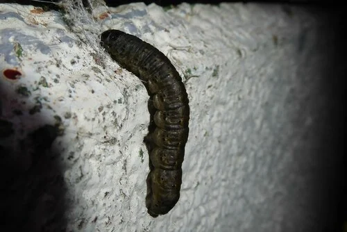

幼苗一夜倒地，茎在土面附近被咬断
地老虎夜间贴地取食，刚移栽的一行菜可能隔夜就倒几株。选择最新倒伏、断口完整的幼苗来看；如果原先从未见苗，仅凭缺株很难确定原因。

先看哪里
先查看倒苗的断口，再翻土。注意断口是否紧贴土面或稍低，并观察紧邻的幼苗是否仍直立。补苗前先看看缺口两侧仍站立的幼苗，可能会发现茎部尚未完全咬断的植株，便于及时保护。
确认线索
白天在新断茎周围的浅土和碎屑下寻找蜷曲幼虫。与单独一个缺苗位置相比，断口附近找到虫更有辨识力。
相似症状
猝倒苗的茎基部常缢缩或软化。地老虎会咬掉部分茎组织，倒下的苗有时就躺在残茎旁。
处理方法
在新受害处人工捉虫。单株移栽苗可用护圈保护茎基部，下边缘插入土里。
如何复查
次日清晨标出新增倒苗，沿最新受害的边缘检查，比反复翻找旧缺苗处更容易找到活动幼虫。
傍晚在每根断茎旁做标记。第二天先查最新倒苗周围的浅土。如果标记旁只是昨天的断苗进一步萎干，就不能据此定位今晚仍在取食的幼虫。